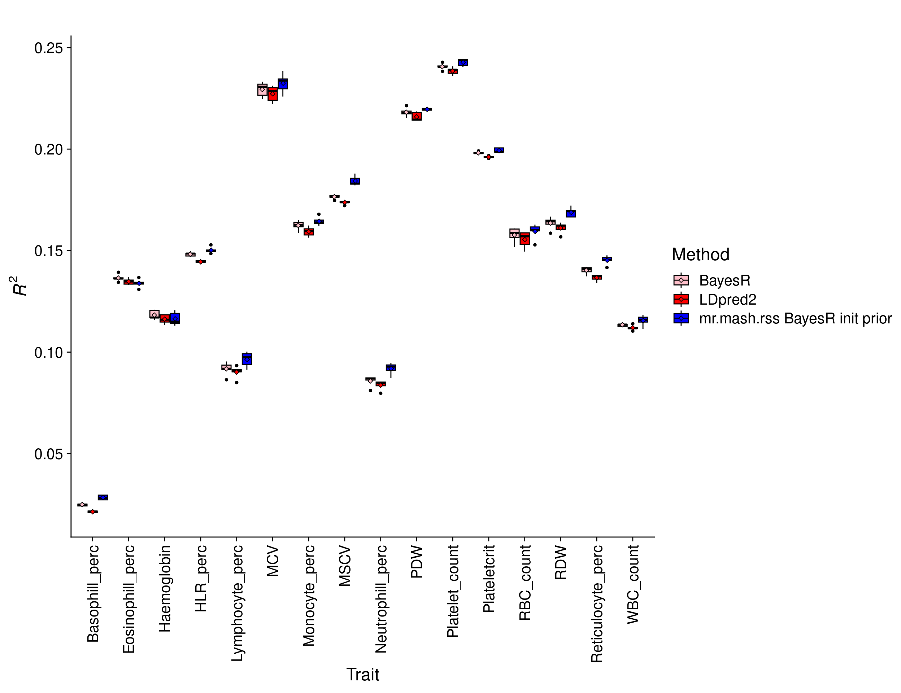
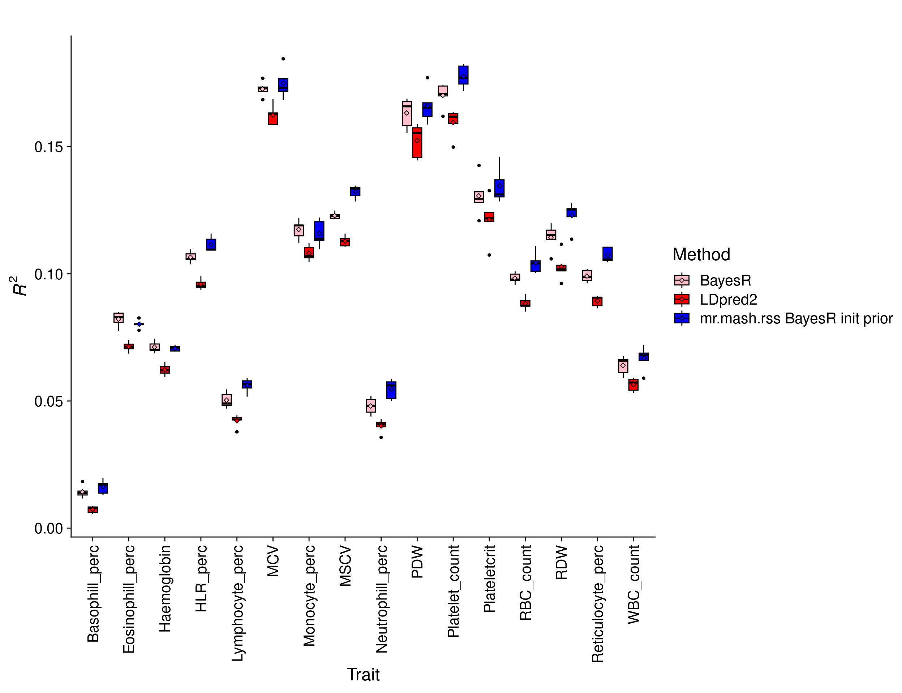

Last updated: 2024-02-13
Checks: 7 0
Knit directory: mr_mash_rss/
This reproducible R Markdown analysis was created with workflowr (version 1.7.0). The Checks tab describes the reproducibility checks that were applied when the results were created. The Past versions tab lists the development history.
Great! Since the R Markdown file has been committed to the Git repository, you know the exact version of the code that produced these results.
Great job! The global environment was empty. Objects defined in the global environment can affect the analysis in your R Markdown file in unknown ways. For reproduciblity it’s best to always run the code in an empty environment.
The command set.seed(20230612) was run prior to running
the code in the R Markdown file. Setting a seed ensures that any results
that rely on randomness, e.g. subsampling or permutations, are
reproducible.
Great job! Recording the operating system, R version, and package versions is critical for reproducibility.
Nice! There were no cached chunks for this analysis, so you can be confident that you successfully produced the results during this run.
Great job! Using relative paths to the files within your workflowr project makes it easier to run your code on other machines.
Great! You are using Git for version control. Tracking code development and connecting the code version to the results is critical for reproducibility.
The results in this page were generated with repository version 9383eec. See the Past versions tab to see a history of the changes made to the R Markdown and HTML files.
Note that you need to be careful to ensure that all relevant files for
the analysis have been committed to Git prior to generating the results
(you can use wflow_publish or
wflow_git_commit). workflowr only checks the R Markdown
file, but you know if there are other scripts or data files that it
depends on. Below is the status of the Git repository when the results
were generated:
Ignored files:
Ignored: .snakemake/
Ignored: data/
Ignored: output/
Ignored: run/
Ignored: tmp/
Untracked files:
Untracked: Snakefile_old
Untracked: code/adjust_LD_test.R
Untracked: code/compute_sumstats_test_bc_ukb.R
Untracked: code/fit_kriging_rss_ukb.R
Untracked: code/fit_mrmashrss_test_ukb.R
Untracked: code/merge_sumstats_all_chr_ukb.R
Untracked: code/split_effects_by_chr_imp_ukb.R
Untracked: scripts/11_run_fit_mrmashrss_by_chr_V_all_chr_bc_ukb.sbatch
Untracked: scripts/11_run_fit_mrmashrss_sparse_LD_mvsusie_paper_prior_by_chr_bc_ukb.sbatch
Untracked: scripts/12_run_compute_pred_accuracy_mrmashrss_sparse_LD_mvsusie_paper_prior_bc_ukb.sbatch
Untracked: scripts/12_run_fit_mrmashrss_sparse_LD_Vcor_all_chr_init_by_chr_bc_ukb.sbatch
Untracked: scripts/13_run_compute_pred_accuracy_mrmashrss_sparse_LD_Vcor_all_chr_init_bc_ukb.sbatch
Untracked: scripts/3_run_compute_sumstats_by_chr_and_fold_test_bc_ukb.sbatch
Untracked: scripts/7_run_compute_residual_cor_all_chr_bc_ukb.sbatch
Untracked: scripts/run_adjust_LD_test.sbatch
Untracked: scripts/run_fit_kriging_rss_by_chr_and_trait_bc_ukb.sbatch
Unstaged changes:
Modified: scripts/12_75_run_fit_mrmashrss_sparse_LD_V_all_chr_init_prior_finemapped_by_chr_bc_sampled_ukb.sbatch
Note that any generated files, e.g. HTML, png, CSS, etc., are not included in this status report because it is ok for generated content to have uncommitted changes.
These are the previous versions of the repository in which changes were
made to the R Markdown (analysis/ukb_bc_results.Rmd) and
HTML (docs/ukb_bc_results.html) files. If you’ve configured
a remote Git repository (see ?wflow_git_remote), click on
the hyperlinks in the table below to view the files as they were in that
past version.
| File | Version | Author | Date | Message |
|---|---|---|---|---|
| Rmd | 9383eec | fmorgante | 2024-02-13 | Add BayesR results with small sample size |
| Rmd | adb9a12 | fmorgante | 2024-02-09 | Allow for mr.mash.rss to be initialized using any other method |
| html | 60889dd | fmorgante | 2024-02-04 | Build site. |
| Rmd | 36dc3cf | fmorgante | 2024-02-04 | Add results with smaller sample size |
| html | 6e40b7a | fmorgante | 2024-01-02 | Build site. |
| Rmd | 87d6792 | fmorgante | 2024-01-02 | Add results with finemapped prior |
| html | 11d9b6c | fmorgante | 2023-11-13 | Build site. |
| Rmd | e2a7fe4 | fmorgante | 2023-11-13 | Add description of the results |
| html | 8417b2f | fmorgante | 2023-11-13 | Build site. |
| Rmd | c254c89 | fmorgante | 2023-11-13 | Try fixing a bug |
| html | a0f2ec9 | fmorgante | 2023-11-13 | Build site. |
| Rmd | 5bd74b4 | fmorgante | 2023-11-13 | Add description of new methods |
| html | 090c323 | fmorgante | 2023-10-30 | Build site. |
| Rmd | 7822773 | fmorgante | 2023-10-30 | Adjust labels |
| html | 9ad448b | fmorgante | 2023-10-30 | Build site. |
| Rmd | 89d9d1f | fmorgante | 2023-10-30 | Add name of the traits |
| html | 2ffac98 | fmorgante | 2023-10-30 | Build site. |
| Rmd | af4c5e8 | fmorgante | 2023-10-30 | Remove ldsc from plots |
| html | 8520d64 | fmorgante | 2023-10-30 | Build site. |
| Rmd | feefb65 | fmorgante | 2023-10-30 | Add mr.mash.rss results |
| html | 7da29c7 | fmorgante | 2023-10-26 | Build site. |
| Rmd | febf669 | fmorgante | 2023-10-26 | Fix another bug |
| html | 7cd0ded | fmorgante | 2023-10-26 | Build site. |
| Rmd | 4b1fbf3 | fmorgante | 2023-10-26 | Add initial bc results |
###Load libraries
library(ggplot2)
library(cowplot)
prefix <- "output/prediction_accuracy/ukb_bc"
prefix_2 <- "output/prediction_accuracy/ukb_bc_sampled"The goal of this analysis is to benchmark the newly developed mr.mash.rss (aka mr.mash with summary data) against already existing methods in the task of predicting phenotypes from genotypes using only summary data. After performing several simulations, we analyzed analysis 16 blood cell traits in UK Biobank.
Following the mvSuSiE paper, we selected 16 blood cell traits from the total available in the UK Biobank haematology data collection and after the filtering steps, we were left with 244,049 samples.
A 5-fold cross validation scheme was employed, whereby the samples were randomly divided in 5 disjoint sets. At each iteration, 4 sets were used as training set and 1 set was used as test set.
Summary statistics were computed in the training set by first regressing out the effect of sex, age at recruitment, age \(\times\) age, assessment centre, and genotype measurement batch, and the top 10 genotype PCs using a linear model. Then, we ran a GWAS using a simple linear regression on the quantile normalized residuals from the previous step.
The sparse LD matrix was computed in the training set as described in the LDpred2 paper
For the majority of the analyses, we used a use a set of 1,054,330 HapMap3 variants. Only for the computation of the data-driven covariance matrices for mr.mash.rss we used a larger sets of variants as described in the mvSuSiE paper.
Two different methods were fitted to the summary statistics:
LDpred2 per-chromosome with the auto option, 1000 iterations (after 500 burn-in iterations), \(h^2\) initialized using an estimate from LD Score regression (LDSC) and \(p\) initialized using the same grid as in the original paper. NB this is a univariate method.
mr.mash.rss per-chromosome, with both canonical and data-driven covariance matrices computed as described in the mvSuSiE paper, updating the (full rank) residual covariance and the mixture weights, without standardizing the variables. The residual covariance was initialized as in the mvSuSiE paper and the mixture weights were initialized as 90% of the weight on the null component and 10% of the weight split equally across the remaining components. The phenotypic covariance was computed as the sample covariance using the individual-level data. NB this is a multivariate method.
mr.mash.rss per-chromosome, as above, but posterior mean of regression coeffcients initialized using the estimates from LDpred2. NB this is a multivariate method.
mr.mash.rss per-chromosome, as above, but posterior mean of regression coeffcients initialized using the estimates from LDpred2, and using finemapped variants (via SuSiE-RSS) to compute the data-driven covariance matrices. NB this is a multivariate method.
Prediction accuracy was evaluated as the \(R^2\) of the regression of (quantile normalized) true phenotypes on the predicted phenotypes in the test set. This metric as the attractive property that its upper bound is \(h_g^2\). Here we report the results for each fold.
dat_ldsc <- matrix(as.numeric(NA), 5, 16)
for(i in 1:5){
for(s in 1:16){
dat_ldsc[i, s] <- readRDS(paste0("output/ldsc_fit/ukb_bc_chrAll_ldsc_fit_trait", s, "_", i, ".rds"))["h2"]
}
if(i>1){
dat_mrmash <- rbind(dat_mrmash, readRDS(paste0(prefix, "_mr_mash_rss_sparse_LD_V_all_chr_pred_acc_", i, ".rds"))$r2)
dat_mrmash_init <- rbind(dat_mrmash_init, readRDS(paste0(prefix, "_mr_mash_rss_sparse_LD_V_all_chr_init_pred_acc_", i, ".rds"))$r2)
dat_mrmash_init_fm_prior <- rbind(dat_mrmash_init_fm_prior, readRDS(paste0(prefix, "_mr_mash_rss_sparse_LD_V_all_chr_init_prior_finemapped_pred_acc_", i, ".rds"))$r2)
dat_ldpred2 <- rbind(dat_ldpred2, readRDS(paste0(prefix, "_ldpred2_auto_pred_acc_", i, ".rds"))$r2)
dat_bayesR <- rbind(dat_bayesR, readRDS(paste0(prefix, "_bayesR_pred_acc_", i, ".rds"))$r2)
} else {
dat_mrmash <- readRDS(paste0(prefix, "_mr_mash_rss_sparse_LD_V_all_chr_pred_acc_", i, ".rds"))$r2
dat_mrmash_init <- readRDS(paste0(prefix, "_mr_mash_rss_sparse_LD_V_all_chr_init_pred_acc_", i, ".rds"))$r2
dat_mrmash_init_fm_prior <- readRDS(paste0(prefix, "_mr_mash_rss_sparse_LD_V_all_chr_init_prior_finemapped_pred_acc_", i, ".rds"))$r2
dat_ldpred2 <- readRDS(paste0(prefix, "_ldpred2_auto_pred_acc_", i, ".rds"))$r2
dat_bayesR <- readRDS(paste0(prefix, "_bayesR_pred_acc_", i, ".rds"))$r2
}
}
means_mrmash <- colMeans(dat_mrmash)
means_mrmash_init <- colMeans(dat_mrmash_init)
means_mrmash_init_fm_prior <- colMeans(dat_mrmash_init_fm_prior)
means_ldpred2 <- colMeans(dat_ldpred2)
means_bayesR <- colMeans(dat_bayesR)
perc_change <- ((means_mrmash_init-means_ldpred2)/means_ldpred2)*100
perc_change_fm_prior <- ((means_mrmash_init_fm_prior-means_ldpred2)/means_ldpred2)*100
perc_change_bayesR_fm_prior <- ((means_mrmash_init_fm_prior-means_bayesR)/means_bayesR)*100
pheno <- readRDS("data/phenotypes/ukb_cleaned_bc_adjusted_pheno_test_1.rds")
names(perc_change) <- colnames(pheno)
names(perc_change_fm_prior) <- colnames(pheno)
names(perc_change_bayesR_fm_prior) <- colnames(pheno)
linez <- data.frame(trait=colnames(pheno),
h2=colMeans(dat_ldsc))
r2 <- c(as.vector(dat_mrmash), as.vector(dat_mrmash_init), as.vector(dat_mrmash_init_fm_prior),
as.vector(dat_ldpred2), as.vector(dat_bayesR))
method <- rep(c("mr_mash_rss", "mr_mash_rss_init", "mr_mash_rss_init_fm_prior", "ldpred2_auto", "bayesR"), each=80)
trait <- rep(colnames(pheno), each=5)
res <- data.frame(method, trait, r2)
res <- res[which(res$method %in% c("bayesR", "ldpred2_auto", "mr_mash_rss", "mr_mash_rss_init", "mr_mash_rss_init_fm_prior")), ]
res <- transform(res,
method=factor(method, levels=c("bayesR", "ldpred2_auto",
"mr_mash_rss", "mr_mash_rss_init", "mr_mash_rss_init_fm_prior"),
labels=c("BayesR", "LDpred2", "mr.mash.rss", "mr.mash.rss init", "mr.mash.rss init prior")),
trait=factor(trait))
p_methods_shared <- ggplot(res, aes(x = trait, y = r2, fill = method)) +
geom_boxplot(color = "black", outlier.size = 1, width = 0.85) +
stat_summary(fun=mean, geom="point", shape=23,
position = position_dodge2(width = 0.87,
preserve = "single")) +
scale_fill_manual(values = c("pink", "red", "green", "orange", "blue")) +
labs(x = "Trait", y = expression(italic(R)^2), fill="Method", title="") +
# facet_grid(~trait, scales="free_x") +
# geom_hline(aes(yintercept = h2), linez) +
theme_cowplot(font_size = 18) +
theme(axis.text.x = element_text(angle = 90, vjust = 0.5, hjust=1))
print(p_methods_shared)
| Version | Author | Date |
|---|---|---|
| 60889dd | fmorgante | 2024-02-04 |
The percentage change in \(R^2\) of mr.mash.rss init prior over BayesR by trait is:
perc_change_bayesR_fm_prior WBC_count RBC_count Haemoglobin MCV
1.0764560 1.0705411 -1.3652685 1.3731148
RDW Platelet_count Plateletcrit PDW
3.1868160 1.1206196 0.5615176 0.6856654
Lymphocyte_perc Monocyte_perc Neutrophill_perc Eosinophill_perc
5.2227381 1.0893654 7.4217879 -2.2419269
Basophill_perc Reticulocyte_perc MSCV HLR_perc
13.0740144 3.4547098 4.6498409 1.4944277 The overall percentage change in \(R^2\) of mr.mash.rss init prior over BayesR across traits is 2.6171512.
We hypothesized that the advantage of a multivariate analysis would be more pronounced with a smaller sample size. Thus, we randomly sampled 75,000 individuals from the 244,000 and repeated the analyses above.
for(i in 1:5){
if(i>1){
dat_mrmash_init_fm_prior <- rbind(dat_mrmash_init_fm_prior, readRDS(paste0(prefix_2, "_mr_mash_rss_sparse_LD_V_all_chr_init_prior_finemapped_pred_acc_", i, ".rds"))$r2)
dat_ldpred2 <- rbind(dat_ldpred2, readRDS(paste0(prefix_2, "_ldpred2_auto_pred_acc_", i, ".rds"))$r2)
dat_bayesR <- rbind(dat_bayesR, readRDS(paste0(prefix_2, "_bayesR_pred_acc_", i, ".rds"))$r2)
} else {
dat_mrmash_init_fm_prior <- readRDS(paste0(prefix_2, "_mr_mash_rss_sparse_LD_V_all_chr_init_prior_finemapped_pred_acc_", i, ".rds"))$r2
dat_ldpred2 <- readRDS(paste0(prefix_2, "_ldpred2_auto_pred_acc_", i, ".rds"))$r2
dat_bayesR <- readRDS(paste0(prefix_2, "_bayesR_pred_acc_", i, ".rds"))$r2
}
}
means_mrmash_init_fm_prior <- colMeans(dat_mrmash_init_fm_prior)
means_ldpred2 <- colMeans(dat_ldpred2)
means_bayesR <- colMeans(dat_bayesR)
perc_change_fm_prior <- ((means_mrmash_init_fm_prior-means_ldpred2)/means_ldpred2)*100
perc_change_bayesR_fm_prior <- ((means_mrmash_init_fm_prior-means_bayesR)/means_bayesR)*100
pheno <- readRDS("data/phenotypes/ukb_cleaned_bc_adjusted_pheno_test_1.rds")
names(perc_change_fm_prior) <- colnames(pheno)
names(perc_change_bayesR_fm_prior) <- colnames(pheno)
r2 <- c(as.vector(dat_mrmash_init_fm_prior), as.vector(dat_ldpred2), as.vector(dat_bayesR))
method <- rep(c("mr_mash_rss_init_fm_prior", "ldpred2_auto", "bayesR"), each=80)
trait <- rep(colnames(pheno), each=5)
res <- data.frame(method, trait, r2)
res <- res[which(res$method %in% c("bayesR", "ldpred2_auto", "mr_mash_rss_init_fm_prior")), ]
res <- transform(res,
method=factor(method, levels=c("bayesR", "ldpred2_auto", "mr_mash_rss_init_fm_prior"),
labels=c("BayesR", "LDpred2", "mr.mash.rss init prior")),
trait=factor(trait))
p_methods_shared <- ggplot(res, aes(x = trait, y = r2, fill = method)) +
geom_boxplot(color = "black", outlier.size = 1, width = 0.85) +
stat_summary(fun=mean, geom="point", shape=23,
position = position_dodge2(width = 0.87,
preserve = "single")) +
scale_fill_manual(values = c("pink", "red", "blue")) +
labs(x = "Trait", y = expression(italic(R)^2), fill="Method", title="") +
# facet_grid(~trait, scales="free_x") +
# geom_hline(aes(yintercept = h2), linez) +
theme_cowplot(font_size = 18) +
theme(axis.text.x = element_text(angle = 90, vjust = 0.5, hjust=1))
print(p_methods_shared)
| Version | Author | Date |
|---|---|---|
| 60889dd | fmorgante | 2024-02-04 |
The percentage change in \(R^2\) of mr.mash.rss init prior over BayesR by trait is:
perc_change_bayesR_fm_prior WBC_count RBC_count Haemoglobin MCV
3.2036534199 6.3578037992 -0.0001688431 1.3798038543
RDW Platelet_count Plateletcrit PDW
5.7435803143 3.9794938660 2.8926057502 1.5244281537
Lymphocyte_perc Monocyte_perc Neutrophill_perc Eosinophill_perc
9.1073094157 -3.0325083273 11.5823290872 -2.4125973315
Basophill_perc Reticulocyte_perc MSCV HLR_perc
10.2058431304 7.0892935140 7.3419703787 3.0189283421 The overall percentage change in \(R^2\) of mr.mash.rss init prior over BayesR across traits is 4.2488605.
sessionInfo()R version 4.1.2 (2021-11-01)
Platform: x86_64-pc-linux-gnu (64-bit)
Running under: Rocky Linux 8.5 (Green Obsidian)
Matrix products: default
BLAS/LAPACK: /opt/ohpc/pub/libs/gnu9/openblas/0.3.7/lib/libopenblasp-r0.3.7.so
locale:
[1] LC_CTYPE=en_US.UTF-8 LC_NUMERIC=C
[3] LC_TIME=en_US.UTF-8 LC_COLLATE=en_US.UTF-8
[5] LC_MONETARY=en_US.UTF-8 LC_MESSAGES=en_US.UTF-8
[7] LC_PAPER=en_US.UTF-8 LC_NAME=C
[9] LC_ADDRESS=C LC_TELEPHONE=C
[11] LC_MEASUREMENT=en_US.UTF-8 LC_IDENTIFICATION=C
attached base packages:
[1] stats graphics grDevices utils datasets methods base
other attached packages:
[1] cowplot_1.1.1 ggplot2_3.4.3
loaded via a namespace (and not attached):
[1] Rcpp_1.0.11 highr_0.10 pillar_1.9.0 compiler_4.1.2
[5] bslib_0.5.0 later_1.3.1 jquerylib_0.1.4 git2r_0.32.0
[9] workflowr_1.7.0 tools_4.1.2 digest_0.6.33 gtable_0.3.3
[13] jsonlite_1.8.7 evaluate_0.21 lifecycle_1.0.3 tibble_3.2.1
[17] pkgconfig_2.0.3 rlang_1.1.1 cli_3.6.1 rstudioapi_0.15.0
[21] yaml_2.3.7 xfun_0.39 fastmap_1.1.1 withr_2.5.0
[25] dplyr_1.1.2 stringr_1.5.0 knitr_1.43 generics_0.1.3
[29] fs_1.6.3 vctrs_0.6.3 sass_0.4.7 tidyselect_1.2.0
[33] rprojroot_2.0.3 grid_4.1.2 glue_1.6.2 R6_2.5.1
[37] fansi_1.0.4 rmarkdown_2.23 farver_2.1.1 magrittr_2.0.3
[41] whisker_0.4.1 scales_1.2.1 promises_1.2.0.1 htmltools_0.5.5
[45] colorspace_2.1-0 httpuv_1.6.11 labeling_0.4.2 utf8_1.2.3
[49] stringi_1.7.12 munsell_0.5.0 cachem_1.0.8